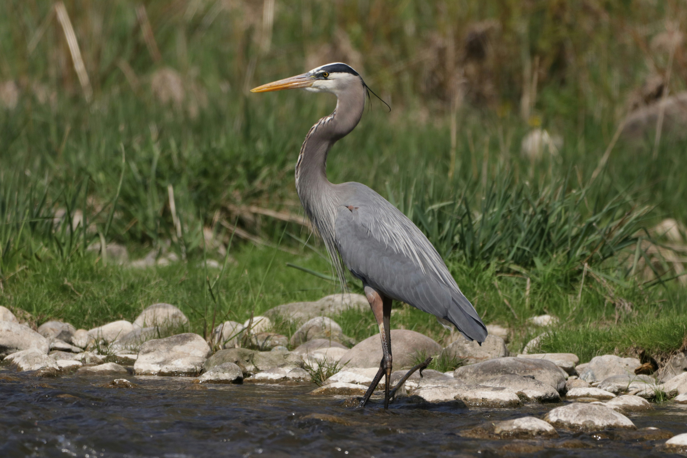
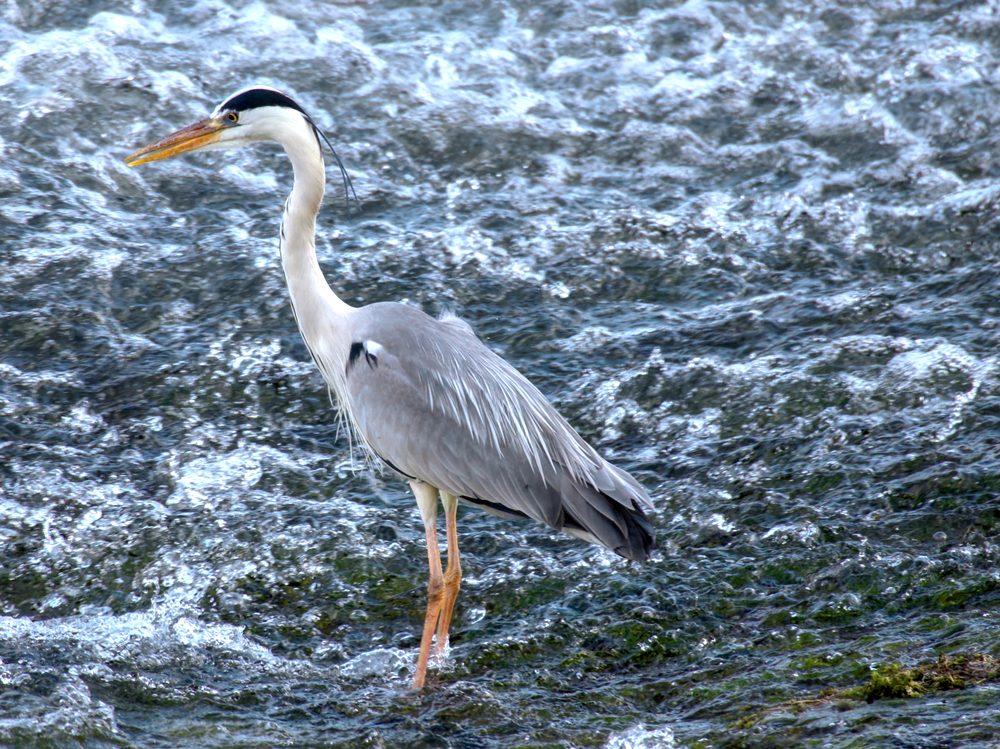
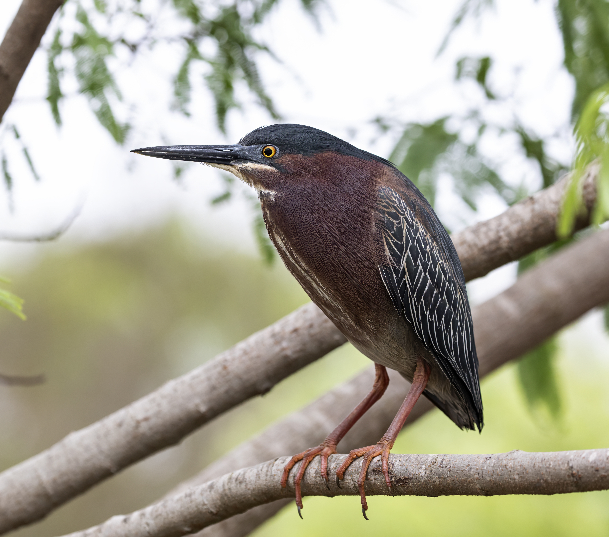

About Birds
Birds are warm-blooded vertebrates that have feathers,
beaks, and wings. Most birds can fly, although some
species cannot. They live in many different habitats
around the world and have different diets and behaviors.
Herons are birds in the family Ardeidae. They are known
for their long legs, long necks, and pointed bills.
Many herons live near lakes, rivers, marshes, and other
wetland habitats where they hunt for food.
Three Types of Herons
1. Great Blue Heron

The great blue heron is a large wading bird found
throughout much of North America. It has blue-gray
feathers, long legs, and a long, pointed bill.
It often stands still in shallow water while
searching for fish and other prey.
Read more about the Great Blue Heron
Characteristics
- Habitat: Lakes, marshes, and coastal areas
- Food: Fish, amphibians, and other small animals
- Appearance: Blue-gray feathers and a long neck
2. Grey Heron

The grey heron is a tall wading bird found across
parts of Europe, Asia, and Africa. It has gray
feathers, a pale head, and long legs. It usually
lives near water and hunts by waiting patiently
for prey to come within reach.
Read more about the Grey Heron
Characteristics
- Habitat: Wetlands, rivers, and lakes
- Food: Fish, frogs, and small animals
- Appearance: Gray body, pale head, and long legs
3. Green Heron

The green heron is a smaller heron found in North
and Central America. Its feathers have dark green
coloring, and its neck and chest have rich
chestnut coloring. Unlike larger herons, it often
hunts from the edge of the water instead of
wading far into it.
Read more about the Green Heron
Characteristics
- Habitat: Ponds, marshes, and wooded waterways
- Food: Fish, insects, and amphibians
- Behavior: Often waits quietly to catch its prey